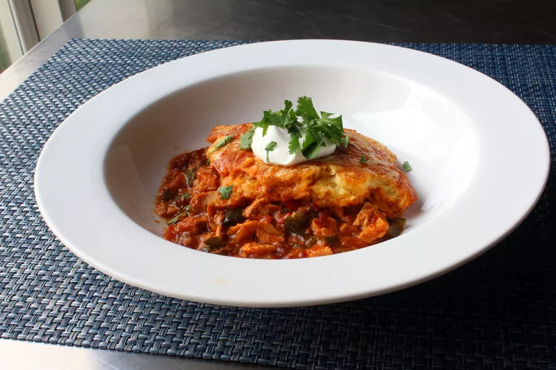

lasagna

Chef John's lasagna
Description
It's time for Thanksgiving, the Sequel!Once you've had your fill of turkey sandwiches,try these receipes that are arguably bigger than the originals
Ingredients
- Vegetables
- Cheese
- Tomato Sauce
- Pasta
- beef
Steps
- Put pasta water on to boil
- Brown the ground beef
- Cook the boil pepper,onions,garlic
- Boil and drain the lasagna noodles
- Heat the oven to 375F
- Bake